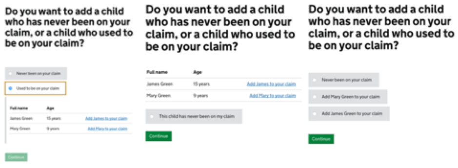

Case Study
Tax Credits /
HM Revenue and Customs
Note
Unfortunately the time I spent learning my core UX skills as a placement student Interaction Designer at HMRC were not very well documented.
During my placement I learned to work with multidisciplinary teams to the high quality of Government Digital Service standards.
Tax Credits
My responsibility towards the end of the placement involved ensuring real people can interact with government and ensure they receive the right amount of tax credits.

Above is an example of the exploratory method I took to ensuring the best possible product as each iteration was thoroughly discussed, critiqued and tested with real users.